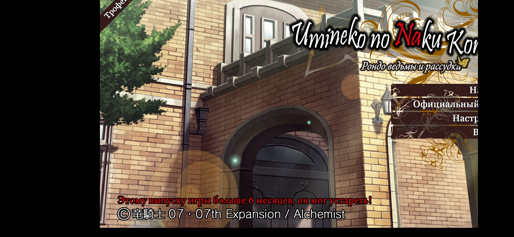

Lolkek123
2020-07-24 14:13:14
Всем привет. У меня телефон Xiaomi redmi note 7 pro(расширение 2340х1080, 10 андроид) и изображение на нем смещено вправо,тогда как для того,чтобы нажать на кнопки, приходится нажимать на экране левее,иначе на нажатия самих кнопок не реагирует,пытался менять расширение,вид окна, бесполезно. Что делать,ребята?
- Attachments
-
- 
- Screenshot_20200724-170932.jpg (1.35 MiB) Viewed 5418 times